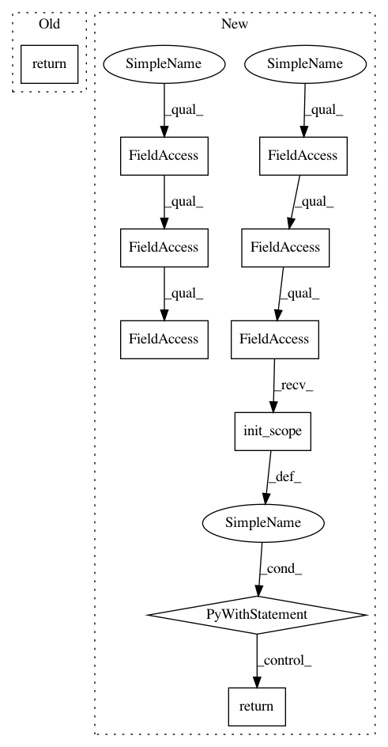

7c84229f350b83ce397b8c65e52e333e99b6d19d,keras/backend/tensorflow_backend.py,,truncated_normal,#Any#Any#Any#Any#Any#,4404
Before Change
dtype = floatx()
if seed is None:
seed = np.random.randint(10e6)
return tf.truncated_normal(shape, mean, stddev, dtype=dtype, seed=seed)
// CTC
// TensorFlow has a native implementation, but it uses sparse tensors
After Change
dtype = floatx()
if seed is None:
seed = np.random.randint(10e6)
with tf_ops.init_scope():
return tf_keras_backend.truncated_normal(
shape, mean=mean, stddev=stddev, dtype=dtype, seed=seed)
// CTC
// TensorFlow has a native implementation, but it uses sparse tensors
// and therefore requires a wrapper for Keras. The functions below convert
// dense to sparse tensors and also wraps up the beam search code that is
// in TensorFlow"s CTC implementation
@tf_graph_op
def ctc_label_dense_to_sparse(labels, label_lengths):
Converts CTC labels from dense to sparse.
In pattern: SUPERPATTERN
Frequency: 4
Non-data size: 10
Instances
Project Name: keras-team/keras
Commit Name: 7c84229f350b83ce397b8c65e52e333e99b6d19d
Time: 2019-03-04
Author: francois.chollet@gmail.com
File Name: keras/backend/tensorflow_backend.py
Class Name:
Method Name: truncated_normal
Project Name: keras-team/keras
Commit Name: 7c84229f350b83ce397b8c65e52e333e99b6d19d
Time: 2019-03-04
Author: francois.chollet@gmail.com
File Name: keras/backend/tensorflow_backend.py
Class Name:
Method Name: random_normal
Project Name: keras-team/keras
Commit Name: 7c84229f350b83ce397b8c65e52e333e99b6d19d
Time: 2019-03-04
Author: francois.chollet@gmail.com
File Name: keras/backend/tensorflow_backend.py
Class Name:
Method Name: random_binomial
Project Name: keras-team/keras
Commit Name: 7c84229f350b83ce397b8c65e52e333e99b6d19d
Time: 2019-03-04
Author: francois.chollet@gmail.com
File Name: keras/backend/tensorflow_backend.py
Class Name:
Method Name: random_uniform